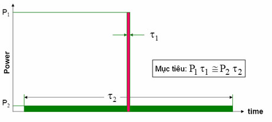

TRAC 2000 - GIỚI THIỆU CHUNG |
RADAR GIÁM SÁT SƠ CẤP PSR (PRIMARY SURVEILLANCE RADAR) |
NÉN XUNG |
 Nén xung là kỹ thuật cho phép phát xung dài được mã hoá (điều chế) để tăng năng lượng phát xạ, đồng thời xử lý (nén) tín hiệu phản xạ thu nhận được để có xung hẹp tương ứng với độ phân giải yêu cầu theo cự ly. Trong thực tế nén xung thường được thực hiện nhờ các mạch lọc phối hợp (Matched filter). Xung mã (xung phát) có thể được biểu diễn như đáp ứng tần số H(ω) hay đáp ứng thời gian h(t) đối với xung đơn vị của mạch tạo xung mã, còn đáp ứng tần số của mạch lọc phối hợp là hàm liên hợp phức H*(ω) của H(ω) (hay hàm ngược của h(t)). |
Để nâng cao cự ly và chất lượng phát hiện của radar sơ cấp cần phải tăng năng lượng phát xạ. Điều này có thể đạt được bằng hai cách: Tăng công suất đỉnh hoặc tăng độ rộng của xung phát. Trong thực tế tăng công suất xung phát xạ không phải là điều dễ thực hiện. Tăng độ rộng xung có thể dễ dàng hơn, tuy nhiên lúc này khả năng phân giải theo cự ly bị ảnh hưởng đáng kể. |
Các dạng mã (điều chế) xung: Thiết bị nén xung
- Nén xung bằng thiết bị Sóng âm bề măt (SAW – Surface Acoustic Wave): SAW bao gồm bộ biến năng đầu vào và đầu ra lắp trên tấm đế bằng vật liệu áp điện (thạch anh). Các bộ biến năng này là các tấm phim kim loại có dạng ngón tay (hay răng lược) được cắm trên bề mặt của lớp truyền âm thanh. Chính hình dạng của các tấm phim kim loại này quyết định đặc tính tần số của thiết bị. Bộ biến năng đầu vào biến đổi tín hiệu điện thành sóng âm rồi truyền đi trên bề mặt vật liệu truyền âm. Bộ biến năng đầu ra lại biến đổi sóng âm bề mặt thành tín hiệu điện. Các thành phần tần số sóng âm khác nhau sẽ bị giữ chậm khác nhau khi truyền qua thiết bị
Nén xung điều tần tuyến tính
Nén xung điều tần phi tuyến tính Nén xung điều tần tuyến tính đòi hỏi phải xử lý trọng số biên độ (amplitude weighting) để hạn chế ảnh hưởng của các đỉnh phụ (time sidelobe hay range sidelobe). Trong khi đó nén xung điều tần phi tuyến tính không cần phải xử lý các đỉnh phụ do dạng điều chế tần số đã được tính toán để nhận được phổ biên độ mong muốn. Xử dụng mạch lọc phối hợp để nén xung và nhận được xung nén có mức đỉnh phụ thấp hoàn toàn tương hợp với dạng điều tần này. Vì vậy hiện tượng tổn thất về tỷ số tín/tạp do phải sử dụng kỹ thuật “không phối hợp” (mismatch) trong xử lý trọng số (weighting) được loại trừ. Nén xung mã pha (điều pha)
|